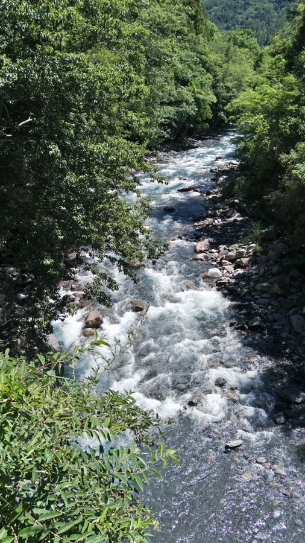
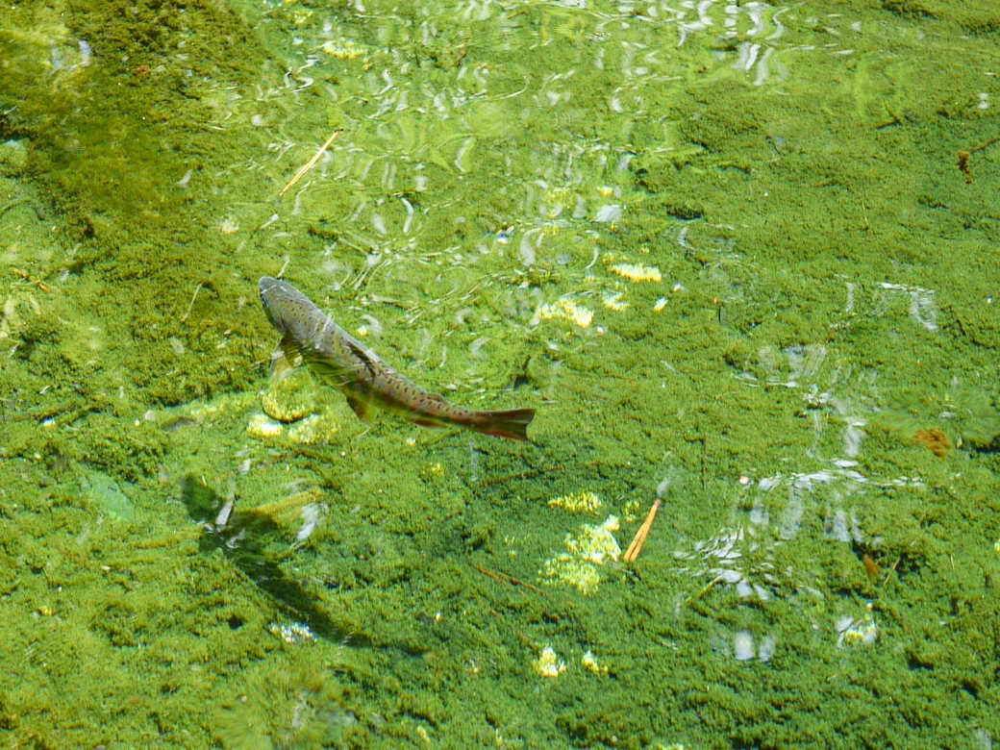
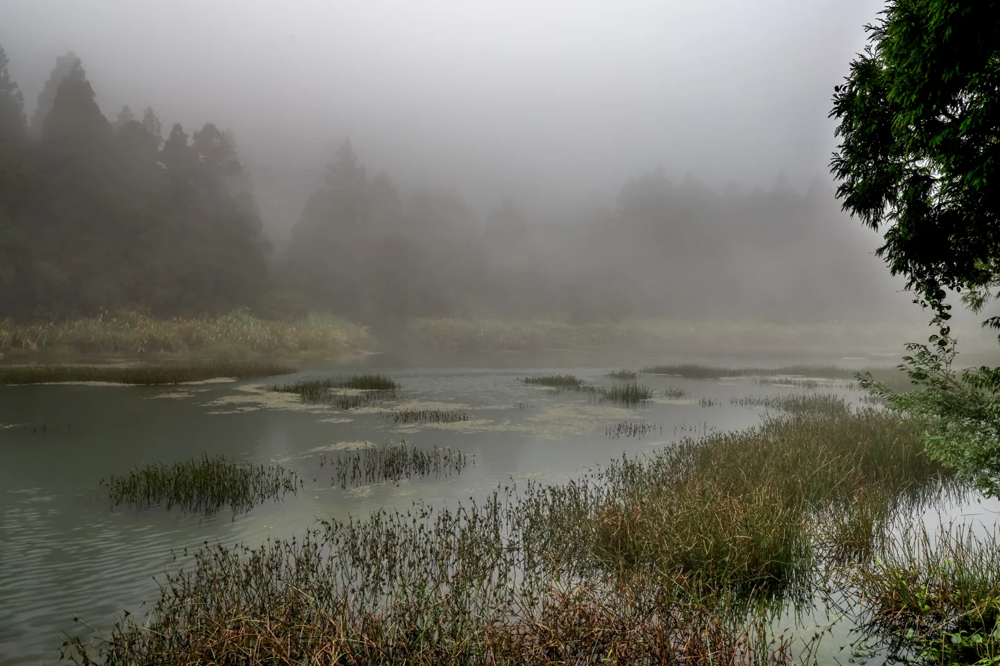

溪水那麼急，小動物怎麼不被沖走？
河流與湖泊
溪流急湍時，石頭邊緣和底下卻有水流較慢的小空間。對溪裡的小動物來說，住在哪裡，跟長成什麼樣子一樣重要。


小石頭可以是住所的一部分
有些石蠶蛾的幼蟲會吐絲，把小石頭或枯葉黏在一起做成護管，在水裡帶著它活動。種類不同，用的材料與構造也會不同。沿著河道看，上、中、下游的水深、流速與河底材質持續改變，生物能利用的空間也跟著換。
到了比較靜的水，光決定植物能長在哪裡
湖泊和池塘的水流通常較慢。植物可以扎根在有光的淺水岸邊，也有些從底泥長出、把葉伸上水面。深水或混濁的水能讓更少的光到達底部，能在水底行光合作用的範圍也會縮小。臺灣水韭的野生族群分布在陽明山夢幻湖。
溪流上、中、下游
上游坡陡、水流常較急。石塊下方提供避開急流的空間。
中游河道常變寬，較深的水潭與淺而急的水段可以相間出現。
下游地勢多較平緩。部分河段流速低，細砂和有機碎屑容易堆積。
河流與溪谷
在水流急的河段，溪底石塊會形成縫隙和水流較慢的區域。較平緩的岸邊，又有細砂、落葉和植物可利用。
藻類與植物部分藻類附著石面；岸邊的樹木能遮蔭，掉進溪裡的葉子也會成為部分水生昆蟲的食物來源。
動物石蠶蛾幼蟲常利用石礫和落葉。七家灣溪則是櫻花鉤吻鮭的重要棲地，牠需要冷水環境。

Thumbhero · CC BY-SA 4.0 · 本站縮圖

湖泊、池塘與淡水濕地
水流較慢，從岸邊到較深水域，能到達水底的光逐漸減少。
植物香蒲的莖葉挺出水面，睡蓮把葉子伸到水面，夢幻湖的臺灣水韭則是沉水植物。
動物池邊可能有蛙類活動。夢幻湖的濕地調查記錄了面天樹蛙、腹斑蛙等。

Tslai · CC BY-SA 4.0 · 本站縮圖

想一想
只看池水表面，容易漏掉整片水下棲地。比較露出水面的莖、浮在水面的葉、沉在水裡的植株，就能看出植物怎麼利用光線。
很淺的池塘如果變混濁，水底植物會受影響嗎？
可能會。混濁會削弱水下的光，能行光合作用的深度可能變淺。
資料來源
教材｜《高中基礎生物（下）》6-3，頁 147–151